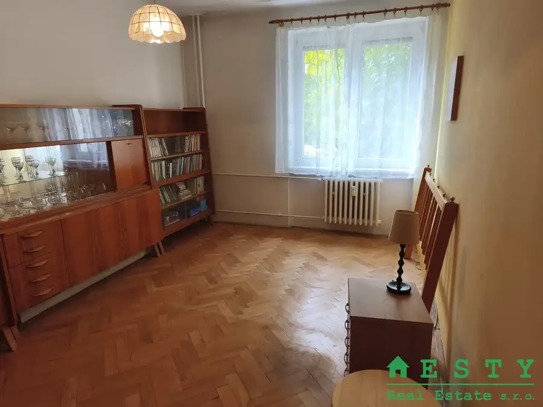
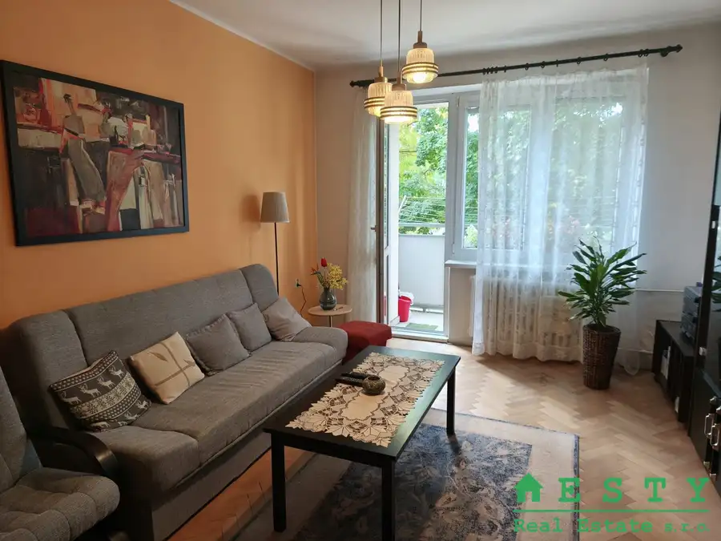
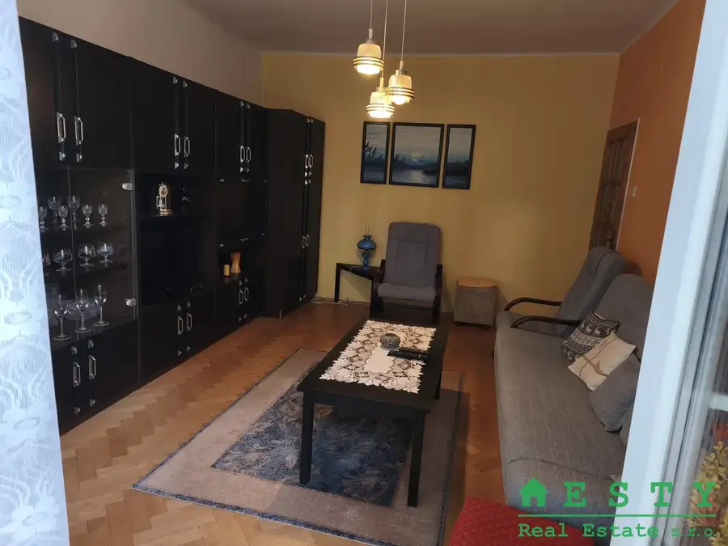
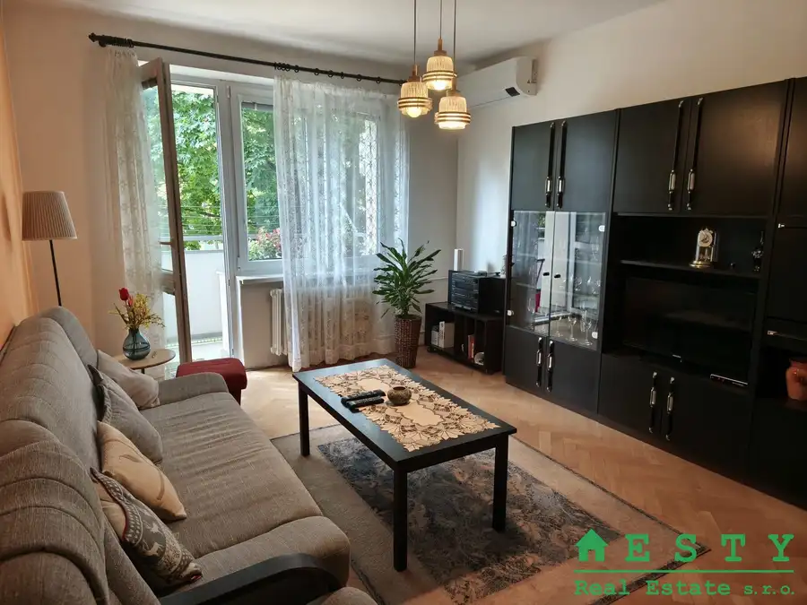

NA PREDAJ 2 izbový byt Bratislava Ružinov
Ružinov, Bratislava





- Dispozícia2-izbový
- Plocha52 m²
- Poschodie1. z 3
- StavČiastočná rekonštrukcia
- VlastníctvoOsobné
O nehnuteľnosti
ESTY Real Estate s.r.o vám vo výhradnom zastúpení klienta ponúka na predaj priestranný 2 izbový byt v tehlovej bytovke s vlastnou kotolňou Bratislava Ružinov, Solivarská na prvom poschodí po čiastočnej rekonštrukcii. Bytovka je zateplená a má novú strechu. Dostatok parkovacieho miesta.Má 52m2, balkón a murovanú pivnicu. Podlahy sú drevené pôvodné parkety, dlažba, Pozostáva z dvoch izieb, chodby, kuchyne, kúpeľne a WC.Lokalita: len 300 metrov od obľúbeného jazera Štrkovec, na dosah kompletná infraštruktúra veľkomesta. Veľmi vyhľadávaná lokalita.Cena: 239.000€V cene je zahrnutá provízia RK! Naša realitná kancelária Esty Real Estate vám zabezpečí všetky právne služby, realitný servis a na požiadanie finančný servis za účelom hypotekárneho financovania • V cene je zahrnutý aj kompletný právny servis. V prípade záujmu o obhliadku ma prosím kontaktujte: na telefónnom čisle: 0918 509 845 email: tazka.eva@estysro.sk
Parametre
- Cena vrátane energií
- Nie
- Doprava
- MHD, Cyklistická infraštruktúra, Letisko, Prístav, Diaľkový autobus, Diaľnica, Vlak
- Druh
- 2 izbový byt
- Dátum zverejnenia
- 30. 09. 2026
- Energetický certifikát budovy
- nie je
- Podlažie
- 1
- Počet balkónov
- 1
- Počet nadzemných podlaží
- 3
- Počet pivníc
- 1
- Počet spální
- 1
- Stav nehnuteľnosti
- Čiastočná rekonštrukcia
- Telekomunikácie
- Internet, Optická sieť
- Typ
- Predaj
- Typ konštrukcie
- Tehlová
- Vlastníctvo
- Osobné
- Vybavenie
- Balkón, Pivnica, Verejné parkovanie, Kočikáreň, Úschovňa bicyklov, Detské ihrisko
- Vykurovanie
- Ústredné
- Úžitková plocha
- 52 m²